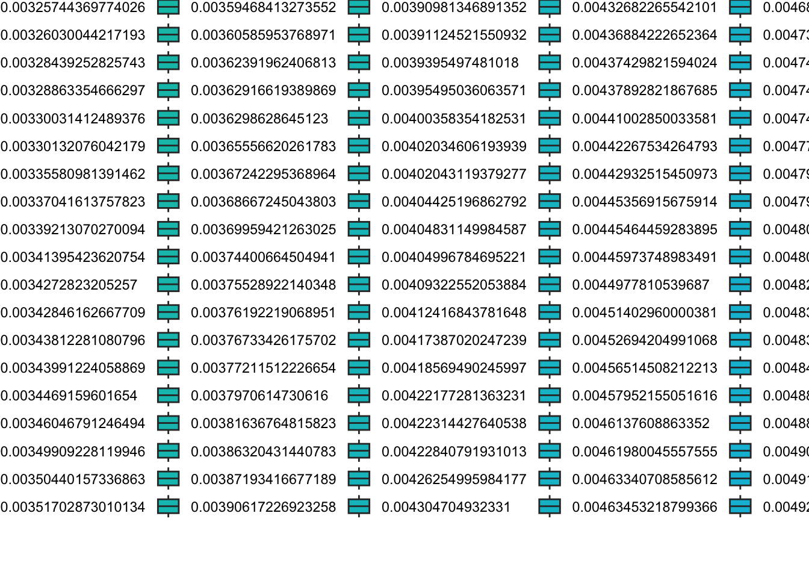

Attaching package: 'zoo'
The following objects are masked from 'package:base':
as.Date, as.Date.numeric
library(RcppRoll) # For roll_meanrlibrary(prophet) # For Prophet model
Loading required package: Rcpp
Attaching package: 'Rcpp'
The following object is masked from 'package:rsample':
populate
Loading required package: rlang
Attaching package: 'rlang'
The following objects are masked from 'package:purrr':
%@%, flatten, flatten_chr, flatten_dbl, flatten_int, flatten_lgl,
flatten_raw, invoke, splice
library(corrplot) # For correlation plot
corrplot 0.95 loaded
library(anomalize) # For anomaly detectionlibrary(tsibble) # For time_decompose and anomalize
Registered S3 method overwritten by 'tsibble':
method from
as_tibble.grouped_df dplyr
Attaching package: 'tsibble'
The following object is masked from 'package:zoo':
index
The following object is masked from 'package:lubridate':
interval
The following objects are masked from 'package:base':
intersect, setdiff, union
library(xgboost) # For XGBoost model
Attaching package: 'xgboost'
The following object is masked from 'package:dplyr':
slice
library(ranger) # For Random Forest enginedata <-read.csv("~/Downloads/dynamic_supply_chain_logistics_dataset.csv")data <- data %>%mutate(timestamp =as.POSIXct(timestamp, tz ="UTC"),date =as_date(timestamp)) %>%group_by(date) %>%summarise(# SUM for flowshistorical_demand =sum(historical_demand, na.rm =TRUE),shipping_costs =sum(shipping_costs, na.rm =TRUE),# MEAN for continuous metricsfuel_consumption_rate =mean(fuel_consumption_rate, na.rm =TRUE),eta_variation_hours =mean(eta_variation_hours, na.rm =TRUE),traffic_congestion_level =mean(traffic_congestion_level, na.rm =TRUE),warehouse_inventory_level=mean(warehouse_inventory_level, na.rm =TRUE),lead_time_days =mean(lead_time_days, na.rm =TRUE),delivery_time_deviation =mean(delivery_time_deviation, na.rm =TRUE),delay_probability =mean(delay_probability, na.rm =TRUE),loading_unloading_time =mean(loading_unloading_time, na.rm =TRUE),customs_clearance_time =mean(customs_clearance_time, na.rm =TRUE),driver_behavior_score =mean(driver_behavior_score, na.rm =TRUE),fatigue_monitoring_score =mean(fatigue_monitoring_score, na.rm =TRUE),# Fraction of High Risk shipments# This is the correct way to calculate the fraction (TRUE/FALSE converts to 1/0)high_risk_fraction =mean(risk_classification =="High Risk", na.rm =TRUE),# Keep other categorical modes by selecting the most frequent oneorder_fulfillment_status =names(sort(table(order_fulfillment_status),decreasing=TRUE))[1],cargo_condition_status =names(sort(table(cargo_condition_status),decreasing=TRUE))[1],handling_equipment_availability =names(sort(table(handling_equipment_availability),decreasing=TRUE))[1],weather_condition_severity =names(sort(table(weather_condition_severity),decreasing=TRUE))[1],.groups ="drop" ) %>%# Ensure date is properly formatted as datemutate(date =as_date(date)) %>%# Sort by date for time-series operationsarrange(date)# Define categorical columns *after* high_risk_fraction is created# Note: 'risk_classification' is NOT included here as it was used to create 'high_risk_fraction'categorical_cols_for_factor <-c("order_fulfillment_status","cargo_condition_status","handling_equipment_availability","weather_condition_severity")# Convert them to factorsdata <- data %>%mutate(across(all_of(categorical_cols_for_factor), as.factor))data <- data %>%mutate(across(where(is.numeric), ~zoo::na.locf(.x, na.rm =FALSE)))
categorical_cols_for_factor <-c("order_fulfillment_status", "weather_condition_severity","cargo_condition_status","handling_equipment_availability") # Removed risk_classification here as well.data <- data %>%mutate(across(all_of(categorical_cols_for_factor), as.factor))# Ensure high_risk_fraction is numeric and not a factordata <- data %>%mutate(high_risk_fraction =as.numeric(high_risk_fraction)) # Important for regression target
df_fe <- data %>%mutate(day_of_week =wday(date, label =TRUE, abbr =FALSE), # Use full names for clarityweek_of_year =week(date),month =month(date, label =TRUE, abbr =FALSE), # Use full names for clarityis_weekend =factor(ifelse(wday(date) %in%c(1, 7), 1, 0), levels =c(0,1), labels =c("No", "Yes")),demand_lag_1 =lag(historical_demand, 1),demand_lag_7 =lag(historical_demand, 7),demand_lag_30 =lag(historical_demand, 30),fuel_consumption_rate_ma_7 =roll_meanr(fuel_consumption_rate, n =7, fill =NA),eta_variation_hours_ma_7 =roll_meanr(eta_variation_hours, n =7, fill =NA) ) %>%drop_na() # This will remove rows where lags/rolling means created NAs.# Make sure you have enough data left.# Note: `drop_na()` here also removes rows if `high_risk_fraction` has NAs.# If `high_risk_fraction` (the target) has NAs, ensure they are handled before this.# Check dimensions after feature engineeringmessage("Dimensions of df_fe after feature engineering and drop_na: ", nrow(df_fe), " rows, ", ncol(df_fe), " columns")
Dimensions of df_fe after feature engineering and drop_na: 1307 rows, 28 columns
# Make sure smooth_vec is available (e.g., from 'smoother' or similar package, or just remove if not needed)# For simplicity, using geom_smooth for trendggplot(df_fe, aes(x = date, y = historical_demand)) +geom_line(alpha =0.6) +geom_smooth(method ="loess", span =0.2, color ="blue", se =FALSE) +# Replaced smooth_veclabs(title ="Historical Demand Over Time",y ="Historical Demand") +theme_minimal()
`geom_smooth()` using formula = 'y ~ x'
# Congestion vs ETA# Ensure traffic_congestion_level is treated as a factor if it represents discrete levelsggplot(df_fe, aes(x =factor(traffic_congestion_level), y = eta_variation_hours)) +geom_boxplot(fill ="lightblue") +labs(title ="ETA Variation by Traffic Congestion Level",x ="Traffic Congestion Level (Factor)",y ="ETA Variation (Hours)") +theme_minimal()
# Weather vs Shipping Costsggplot(df_fe, aes(x = weather_condition_severity, y = shipping_costs, fill = weather_condition_severity)) +geom_boxplot() +labs(title ="Shipping Costs by Weather Severity",x ="Weather Condition Severity",y ="Shipping Costs") +theme_minimal() +theme(axis.text.x =element_text(angle =45, hjust =1))

# Correlation MatrixM <- df_fe %>%select(where(is.numeric)) %>%# Select all numeric columns for correlationselect(-week_of_year) %>%# Remove week_of_year if you don't want it in correlation# or any other numeric columns that are IDs like date componentscor(use ="pairwise.complete.obs") # use="pairwise.complete.obs" handles NAs in correlation calccorrplot(M, method ="circle", type ="upper", order ="hclust", tl.col ="black", tl.srt =45)
df_fe %>%as_tsibble(index = date) %>%time_decompose(fuel_consumption_rate, method ="stl", frequency ="week") %>%# Changed trend = "periodic" to frequency = "week"anomalize(remainder, method ="iqr", alpha =0.05) %>%time_recompose() %>%plot_anomalies(time_recomposed =TRUE) +labs(title ="Fuel Consumption Anomalies") +theme_minimal()
Converting from tbl_ts to tbl_time.
Auto-index message: index = date
frequency = 7 days
trend = 91 days
Registered S3 method overwritten by 'quantmod':
method from
as.zoo.data.frame zoo
# ETA anomaliesdf_fe %>%as_tsibble(index = date) %>%time_decompose(eta_variation_hours, method ="stl", frequency ="week") %>%# Changed trend = "periodic" to frequency = "week"anomalize(remainder, method ="iqr", alpha =0.05) %>%time_recompose() %>%plot_anomalies(time_recomposed =TRUE) +labs(title ="ETA Variation Anomalies") +theme_minimal()
Converting from tbl_ts to tbl_time.
Auto-index message: index = date
Disabling daily seasonality. Run prophet with daily.seasonality=TRUE to override this.
future <-make_future_dataframe(m_prophet, periods =nrow(test_data), freq ="day")forecast <-predict(m_prophet, future)plot(m_prophet, forecast) +labs(title ="Prophet Forecast for Historical Demand") +theme_minimal()
prophet_plot_components(m_prophet, forecast)
library(tidymodels)library(ggplot2)# Recipe for delivery time deviationdelivery_recipe <-recipe(delivery_time_deviation ~ ., data = train_data) %>%update_role(date, new_role ="ID") %>%# Keep date as IDstep_rm(order_fulfillment_status, cargo_condition_status, handling_equipment_availability) %>%step_integer(all_nominal_predictors()) %>%step_impute_mean(all_numeric_predictors()) %>%step_normalize(all_numeric_predictors())# Random Forest model with fixed parametersrf_model <-rand_forest(mtry =5, # number of predictors sampled at each splittrees =1000, # number of treesmin_n =5# minimum node size ) %>%set_engine("ranger", importance ="permutation") %>%set_mode("regression")# Fit workflowrf_fit <-workflow() %>%add_recipe(delivery_recipe) %>%add_model(rf_model) %>%fit(data = train_data)# Predict on test datarf_predictions <-predict(rf_fit, new_data = test_data) %>%bind_cols(test_data %>%select(date, delivery_time_deviation))# Calculate metricsmae_rf <-mae(rf_predictions, truth = delivery_time_deviation, estimate = .pred)rmse_rf <-rmse(rf_predictions, truth = delivery_time_deviation, estimate = .pred)rsq_rf <-rsq(rf_predictions, truth = delivery_time_deviation, estimate = .pred)print(mae_rf)
# A tibble: 1 × 3
.metric .estimator .estimate
<chr> <chr> <dbl>
1 mae standard 0.679
print(rmse_rf)
# A tibble: 1 × 3
.metric .estimator .estimate
<chr> <chr> <dbl>
1 rmse standard 0.865
print(rsq_rf)
# A tibble: 1 × 3
.metric .estimator .estimate
<chr> <chr> <dbl>
1 rsq standard 0.000560
# Predicted vs Actual scatter plotggplot(rf_predictions, aes(x = delivery_time_deviation, y = .pred)) +geom_point(alpha =0.6) +geom_abline(slope =1, intercept =0, color ="red", linetype ="dashed") +labs(title ="Predicted vs Actual Delivery Time Deviation (Random Forest)",subtitle =paste0("MAE: ", round(mae_rf$.estimate, 4), ", RMSE: ", round(rmse_rf$.estimate, 4)),x ="Actual Delivery Time Deviation",y ="Predicted Delivery Time Deviation" ) +theme_minimal() +coord_fixed()
# Actual vs Predicted over timeggplot(rf_predictions, aes(x = date)) +geom_line(aes(y = delivery_time_deviation, color ="Actual")) +geom_line(aes(y = .pred, color ="Predicted"), linetype ="dashed") +labs(title ="Actual vs Predicted Delivery Time Deviation Over Time",x ="Date",y ="Delivery Time Deviation",color ="Type" ) +theme_minimal()
df_fe_risk <- df_fe %>%arrange(date)risk_split <-initial_time_split(df_fe_risk, prop =0.8)risk_train <-training(risk_split)risk_test <-testing(risk_split)message("Risk Train data date range: ", min(risk_train$date), " to ", max(risk_train$date))
Risk Train data date range: 2021-01-31 to 2023-12-11
message("Risk Test data date range: ", min(risk_test$date), " to ", max(risk_test$date))
Risk Test data date range: 2023-12-12 to 2024-08-29